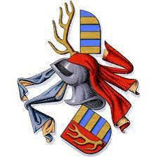

5582856 Rane Jonsen Rani, til Gørslev
Kunglig kammarherre, riddare, fredlös 1287. Blev högst 40 år.

Född:
1254 Gjörslev, Danmark. [1]
Död:
1294 Roskilde, Danmark. [1]
Barn:
Personhistoria
1254
Födelse 1254 Gjörslev, Danmark
[1]
1294
Död 1294 Roskilde, Danmark
[1]
Källor